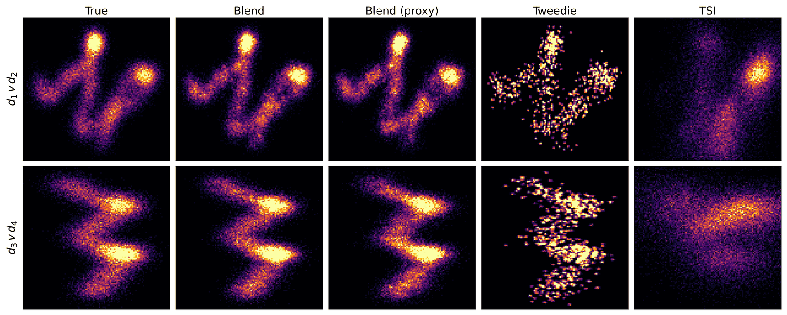
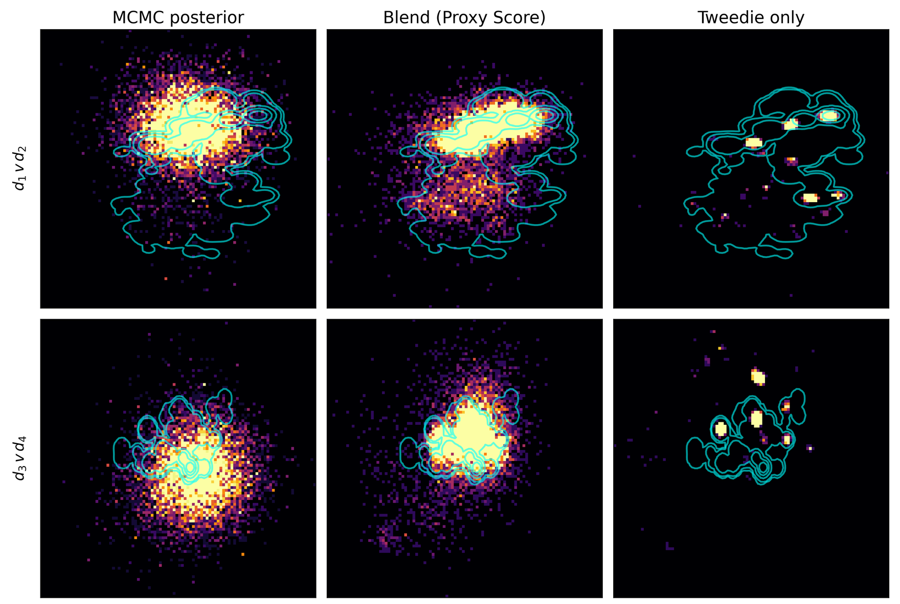

Research
Diffusion models need the score of every noise-perturbed marginal along the forward process. My projects ask how to get those scores when the standard ingredient is missing or noisy: when the latent space of a generative model is itself being learned, or when the target is an unnormalized posterior with no samples.
Jump to: CSEM · Gated Action Dissipation · Laplace–Fisher Gate Identities · Target Score Identity
Latent generative modeling
CSEM: end-to-end training of latent diffusion models In progress
Latent diffusion models are trained in two disconnected stages: an autoencoder first, then a score network on its frozen latents. Component Score Expectation Matching (CSEM) trains both together. The change is in the score target. Denoising score matching regresses onto the noise that was sampled; CSEM regresses onto the analytic score of each diffused encoder posterior. That target is a closed-form function of the encoder's mean and covariance, so the score loss passes gradients back into the encoder.

What the analytic target changes
- Same optimum, less noise. The aggregate latent score is the average of the component scores, so regressing onto them is a lower-variance (Rao–Blackwellized) form of denoising score matching.
- No reward for collapse. Joint training with the standard denoising loss lets the encoder shrink its posterior variance until the learned prior degenerates. CSEM removes that incentive.
- One objective for the whole pipeline. A single horizon parameter moves the objective between a β-VAE, a standard two-stage latent diffusion model, and fully joint training.
Results

Most of the gain comes from letting the score loss shape the latent space. With the autoencoder frozen, swapping in the CSEM target moves Fashion-MNIST FID only from 6.84 to 6.69; training both together brings it to 5.03.
The CIFAR-10 headline comes from the current, longer runs and the matched comparison from an earlier sweep; each comparison holds the backbone, sampler, and evaluation settings fixed. The technical report has the full protocol.
Implementation
- PyTorch; LightningDiT score backbone with adaLN-zero conditioning; class-conditional VAE with perceptual and PatchGAN losses; classifier-free guidance.
- Routed gradients: the representation loss reaches the encoder only at small diffusion times, while the score network trains on the full horizon with the encoder detached.
Diffusion sampling for Bayesian inverse problems
In a Bayesian inverse problem the target density is known up to a constant, together with its score and (Gauss–Newton) curvature, but there are no target samples. These three projects build score estimators from that information and use them to transport samples to the posterior.
Gated Action Dissipation for Bayesian inverse problems Manuscript
Gated Action Dissipation (GAD) samples a posterior by repeated diffusion transport of an unweighted sample bank. Each round rebuilds the reverse-diffusion score from the current samples, the target's score, and its curvature, using the LFGI matrix gate (below) evaluated under the current samples, then transports fresh Gaussian draws to form the next bank. It needs no importance weights, resampling, or inner Markov chain.

- What the rebuilt score can see. The part of the score correction that is recoverable from the current samples and curvature is exactly what the gate reconstructs; the rest is an explicit error term.
- Convergence. For strongly log-concave perturbations of a Gaussian, every round contracts the KL divergence to the target by a factor computed from the target alone, from any starting distribution with finite KL.
- Scope. Well-separated multimodal targets lie outside the theorem, and the manuscript measures how mode separation slows progress.
Nonlinear inverse problems
GAD is tested on a 16-dimensional acoustic source-tracking problem and a 23-dimensional joint earthquake-location and velocity problem, where sparse data leave curved, non-Gaussian posteriors. With the same budget of target, gradient, and curvature evaluations as the MCMC baselines, annealed GAD recovers the curved posterior and reaches the lowest error of the tested samplers in both problems.


Laplace–Fisher Gate Identities for matrix-gated score estimation Preprint
Scalar blends of the Tweedie and target-score estimators are too rigid for singular or strongly anisotropic targets. Casting blended score estimation as conditional risk minimization over matrix-valued gates gives the variance-optimal gate in closed form,
G⋆(y,t) = αt2 ( αt2 I + γt 𝔼[ H0(X0) | Yt = y ] )−1, H0 = −∇2 log p0,
the Laplace–Fisher Gate Identity (LFGI): a resolvent of the conditionally averaged observed information. Because the Tweedie–TSI disagreement has conditional mean zero, the gate changes the estimator's variance without changing its expectation.
- Optimal by construction. Among all matrix gates, LFGI minimizes the conditional score error. A scalar blend cannot: it applies one weight to stiff and soft directions alike.
- Easy to estimate. Averaging the target's Hessian over reference samples and then inverting estimates the gate far more accurately than regressing it from score samples, with finite-sample consistency and stability bounds.
- Normalized densities from MCMC byproducts. A frozen LFGI score defines a normalized posterior density from MCMC pilot samples, supporting energy evaluation and model-evidence estimates that the samples alone cannot give.

Across mixture and funnel benchmarks, LFGI has the lowest score error of the six estimators, about half that of the best alternative on the mixtures, and produces the samples closest to the target. In a Darcy-flow inverse problem, the normalized density that LFGI builds from MCMC pilot samples tracks the true posterior energy far more closely than the standard MAP–Laplace Gaussian approximation.

Variance-reduced diffusion sampling via the Target Score Identity Preprint
The noisy marginal score can be written two ways: through Tweedie's denoising identity, or through the Target Score Identity (TSI), a conditional expectation of the clean target score under the forward diffusion. The two particle-wise estimators have complementary variance: Tweedie's is large at small diffusion times, TSI's at large times.

- A plug-and-play self-normalized importance-sampling estimator of the TSI score that works with standard reverse-time solvers.
- A variance-minimizing blend of the Tweedie and TSI estimators that adapts to state and diffusion time.
- Extensions to data-only settings, through locally fitted proxy scores, and to Bayesian inverse problems.
On MNIST deblurring, where the prior is known only through 10,000 sample digits, the blend with a sample-fitted proxy score fills the posterior that Tweedie fragments. It also gives sharper reconstructions than Tweedie or a MALA sampler on a Gaussian-mixture surrogate prior (28.0 dB PSNR, against 27.0 and 26.0).
